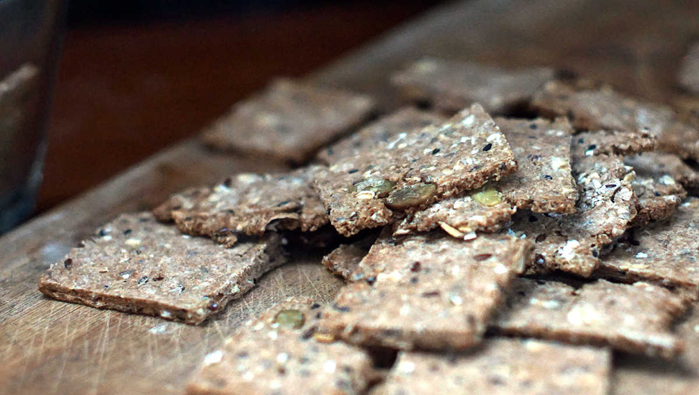

crackers
40 crackers — 25 minutes
Making crackers is simple. There are no downsides to knowing, and in a bind it's a useful skill. What's great about a basic recipe is that you can swap ingredients with little consequence (most times) and you can add to it to suit your needs and cravings.
We love to eat crackers as snacks, usually between breakfast and lunch, a cracker with some peanut butter to quiet our stomachs. We rely on crackers a lot during long passages at sea.
You can make these crackers without extras with just the 'cracker' portion of the recipe. They're just as delicious that way, but you can add seeds and spices for added flavor and nutrition. We like to add seeds to ours, like pumpkin seeds, flax seeds, sesame seeds, or sunflower seeds. We recommend adding black pepper, or chili pepper flakes, these are also delicious if you sprinkle some salt over the top of them.
Substitutions :
Oats : Instead of oats processed into powder, you can use 20 g (1/4 cup) of chickpea flour or 30 g of buckwheat flour. Sometimes we make crackers that use spelt flour.
Buckwheat groats reuse: Whenever we brew a batch of buckwheat tea, we end up with some wet groats which we use in this cracker recipe. The groats will add extra moisture to the recipe, so be careful when adding water, you'll need a lot less.
Oil : You can use any kind of oil, but prioritize mid-neutral oils like olive (like in the recipe) or aromatic oils like sesame and chili oil. Adding sunflower oil or canola is fine, but since these crackers are very basic, adding an strongly-flavored oils will improve the taste. If you're adding plenty of spices, adding aromatic oils isn't as crucial.
 rolled oats30 g
rolled oats30 g spelt flour75 g
spelt flour75 g salt1.25 g
salt1.25 g natural brown sugar15 g
natural brown sugar15 g olive oil25 ml
olive oil25 ml water60 ml
water60 ml
crackers
- Preheat oven to 200 °C (400 °F).
- In a mortar, grind 30 g (1/4 cup) of rolled oats into a fine powder.
- Mix the powdered rolled oats (rough-ish grind is fine) with 75 g (3/4 cup) of spelt flour. Add 1.25 g (1/4 tsp) of salt, 15 g (1 tbsp) of natural commercial brown sugar as well as 25 ml (1 1/2 tbsp) of extra virgin olive oil.
- If you want to add extras, add them now, and stir well.
- Add 60 ml (1/4 cup) of water. Add an extra 15 ml (1 tbsp) of water (sparingly!) if more moisture is needed and knead into a smooth ball.
- Split dough in two. Set your first ball of dough onto a baking mat, or parchment paper, and roll the dough into a thin (~3mm) sheet with a rolling pin.
- Score the dough into cracker-sized squares, so they will be easier to separate afterwards. Repeat for the second ball of dough.
- Bake for 10-12 minutes, keeping an eye on them to make sure they don't burn. Let cool, and enjoy!
 pumpkin seeds30 g
pumpkin seeds30 g black sesame seeds15 g
black sesame seeds15 g flax seeds10 g
flax seeds10 g
extras
- For more bulk, add pumpkin seeds, black sesame seeds and flax seeds!